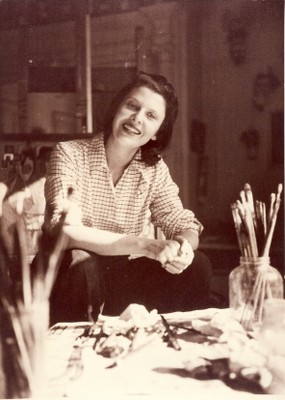
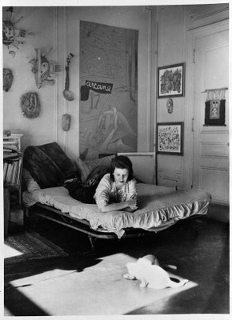
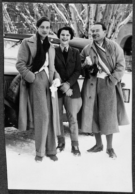
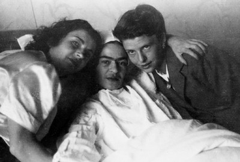
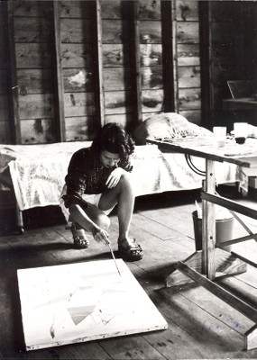

Biographie Sonja Sekula
*8.4.1918 Luzern, †25.4.1963 Zürich
„Immer wieder Geduld und Abwarten und viel Stille während wir Pinsel wechseln – von Farbe zu Farbe wie Schmetterlinge den Staub mischen. Irgend etwas soll und wird bleiben, Papier, Gedanken, Bilder, mögen die dagelassene Arbeit einen Schritt weiter führen zur Entwicklung der Freude. Vom Nahen in das Fremde, Ferne, auch dort eine Nähe, arbeiten mit und ohne Bemerkung ... das stete Erfüllen vom Geheimnis.“
Sonja Sekula, April 1957

Als Tochter eines Ungarn und einer Luzernerin wächst Sonja Sekula in Luzern auf. 1936 zusammen mit den Eltern Emigration in die USA. 1939 Abbruch der Ausbildung am Sarah Lawrence College wegen psychischer Probleme. 1941 nimmt sie an der Art Students League in New York ein Kunststudium auf. Um diese Zeit Kontakt mit den im amerikanischen Exil lebenden Surrealisten um André Breton, der ihre automatistischen Texte und Bilder schätzt; sie wird ab 1943 verschiedentlich eingeladen, an Ausstellungen in Peggy Guggenheims Galerie Art of This Century teilzunehmen. 1946 folgt hier eine Einzelausstellung; ihre Gemälde und Zeichnungen werden lobend besprochen und von renommierten amerikanischen Sammlern erworben. Sekula freundet sich mit der französischen Dichterin und Malerin Alice Rahon, aber auch mit Robert Motherwell, John Cage und Merce Cunningham an. Anregend sind längere Aufenthalte in Mexiko und New Mexico (1945 und 1946–47). 1948 wird sie von der Betty Parsons Gallery unter Vertrag genommen, wo sie bis 1957 fünf beachtete Einzelausstellungen zeigt. 1949 Aufbruch zu einer Europareise, als amerikanische Staatsbürgerin; längerer Aufenthalt in Paris, wo sie mit Vertretern des französischen Informel bei Jeanne Bucher ausstellt. In New York erleidet sie 1951 einen psychischen Zusammenbruch, den ersten in einer langen Reihe von Krisen, die bis zu ihrem Tod anhalten und sie zu wiederholten Klinikaufenthalten zwingen. 1952 verlässt sie die USA und hält sich zur Kur in Kreuzlingen auf. Die Rückkehr nach New York bringt keine Besserung; 1955 endgültige Übersiedlung mit ihren Eltern in die Schweiz; sie lebt vorerst in St. Moritz, ab 1958 in Zürich. Nach Jahren der Isolation zeigt sie 1957 erstmals in Zürich ihre Zeichnungen und Bilder, doch ihre «amerikanisch» wirkenden Werke finden nur wenig Zuspruch. Von Krankheit und Misserfolgen gezeichnet, erhängt sie sich 1963 im Atelier.
„Sie war eine äusserst lebhafte Person, humorvoll, energisch, häufig zu einem Lachen bereit. Der Gedanke an das Sterben liess sie nie los; wenn sie nicht malen konnte, kam das dem Sterben gleich. Wenn sie kurz vor einem Zusammenbruch stand, begann sie in religiösen Ausdrücken zu reden. Sie hatte tiefe Einsichten in die Wahrheit – einen Sinn, sich mit allem zu identifizieren. Es war, als ob sie eine höhere Warnehmungsebene besässe. Es ist ein bedenklicher, doch kennzeichnender Aspekt unserer Gesellschaft, dass man eine Person, die der eigentlichen Lebenswahrheit ganz nahe kommt, möglichst rasch abschieben möchte.“
John Cage; in: Nancy Foote, „Who was Sonja Sekula?“, Art in America, Vol. LIX, Nr. 5 (September – Oktober 1971, Seite 79
„Als ich eines Tages Sonja auf der gegenüberliegenden Seite des Stockwerks besuchte, fiel mir auf, dass sie mit der linken Hand malte. „Sonja“, sagte ich, „bist du nicht Rechtshänderin?“. „Doch“, antwortete sie, „aber ich könnte den Gebrauch meiner rechten Hand verlieren, deshalb übe ich mich im Gebrauch meiner Linken.“
Ich lachte und fragte: „Was passiert, wenn du den Gebrauch beider Hände verlierst?“.
Sie war ganz in ihre Malerei vertieft und würdigte mich keiner Antwort. Als ich sie am nächsten Tag besuchte, sass sie auf dem Boden und hatte grosse Mühe zu malen, da sie den Pinsel zwischen zwei Zehen ihres linken Fusses hielt.“
John Cage; aus “Silence: Lectures and Writings. Middletown, Conn.: Wesleyan University Press, 1961, Seite 56

„Sie war ungewöhnlich begabt; ihre Arbeit hatte eine Ueberzeugungskraft, eine Authentizität, so dass man sich fragte, wer diese Person sei und was mit all dieser Begabung geschehen würde. Sie war eine Ergänzung zu dieser Welt, zu diesem ganzen Ensemble Hemingway’scher Charaktere; sie war sehr begabt, die feine Würze, die ihrer Umgebung ungeheuer viel hinzufügte.“
Morton Feldman; in: Nancy Foote, “Who was Sonja Sekula?”, Art in America, Vol. LIX, Nr. 5 (September – Oktober 1971
Gemeinsam mit den Surrealisten und mit anderen Künstlern ihrer Generation war Sekula das Interesse an den indianischen Kulturen Alaskas und Mexikos und ihrer bildnerischen Produktion, die als Alternative zum Erbe der europäischen Moderne galt. Sonja Sekulas Zeichnungen und Gemälde aus dieser Zeit, erinnern in der Überfülle der darin auftretenden Figuren und Formen und in der intensiven Farbigkeit an die indianische Volkskunst. Anregungen holt sie sich immer wieder auf Reisen. Besonders wichtig werden die mannigfaltigen Eindrücke, die sie in Mexiko sammelt.
Sekula kreiert faszinierende, mehr- und tiefschichtige Kritzelzeichnungen, mit oft skurrilen Titeln und mit handschriftlichen Texten. Diese Frottagen, Sand- und Scratchbilder geben ihre Geheimnisse dem aufmerksamen Betrachter nur nach und nach preis.

Die starken und wechselnden Einflüsse, denen Sonja Sekula zeitlebens ausgesetzt war, manifestieren sich in unterschiedlichste Stilelemente. Die «écriture automatique» der Surrealisten, die spontanen, psychisch motivierten Form- und Farbentwürfe der abstrakten Expressionisten haben Spuren in Sonja Sekulas, in unterschiedlichsten Techniken wie Öl, Gouache oder Papiercollage ausgeführten Arbeiten hinterlassen.

Sonja Sekula stellt in den renommierten Galerien von Peggy Guggenheim und Betty Parsons aus. 1943 ist sie an der «Exhibition by 31 Women» neben klingenden Namen wie Frida Kahlo, Meret Oppenheim und Sophie Taeuber-Arp zu sehen. Mit Robert Motherwell, Jackson Pollock und Ad Reinhardt stellt sie gemeinsam aus. John Cage und Merce Cunningham zählen ebenso zu ihren Bekannten wie Max Ernst und Marcel Duchamp.
„I have never studied anything beside „pain-ting“.“
Life was an interesting experience. I do not regret it.”